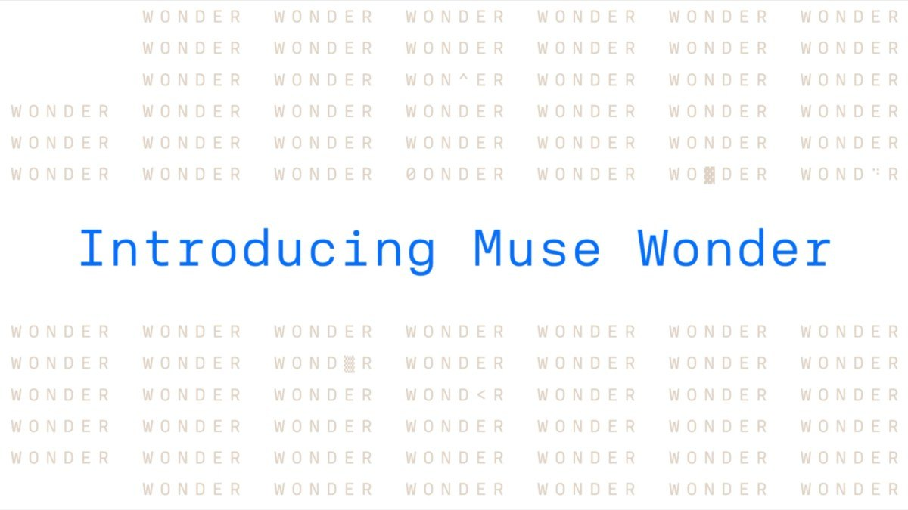
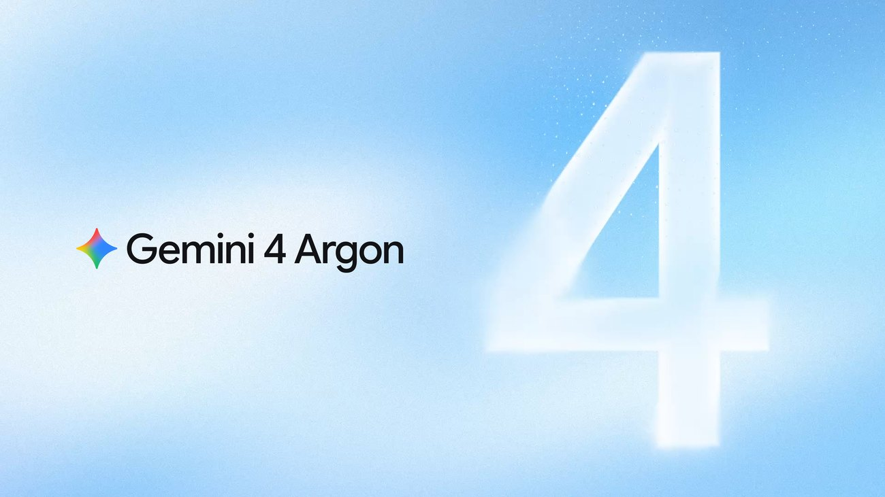
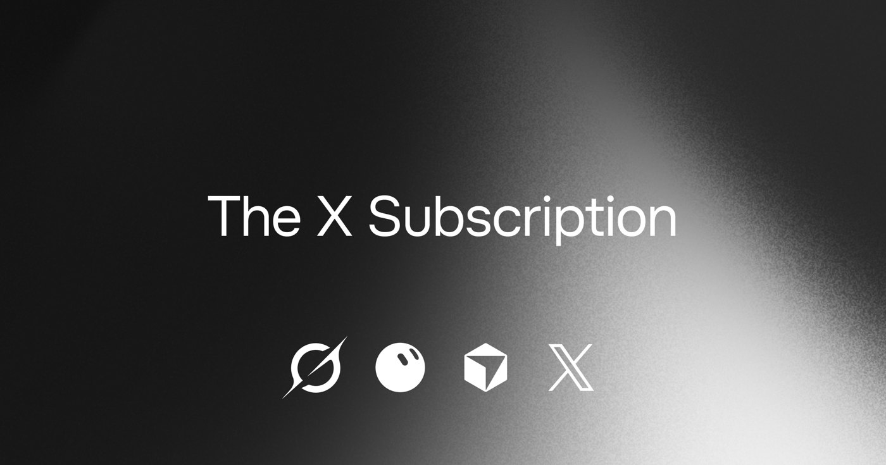
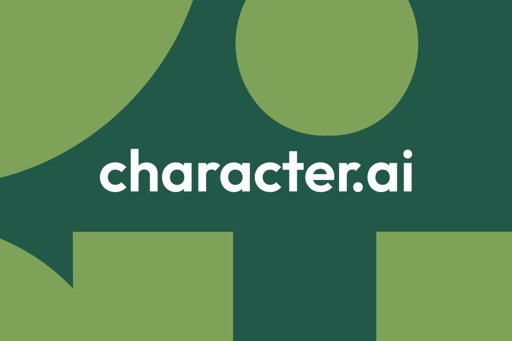
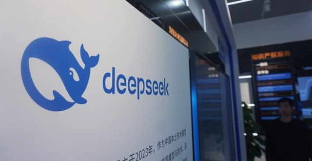
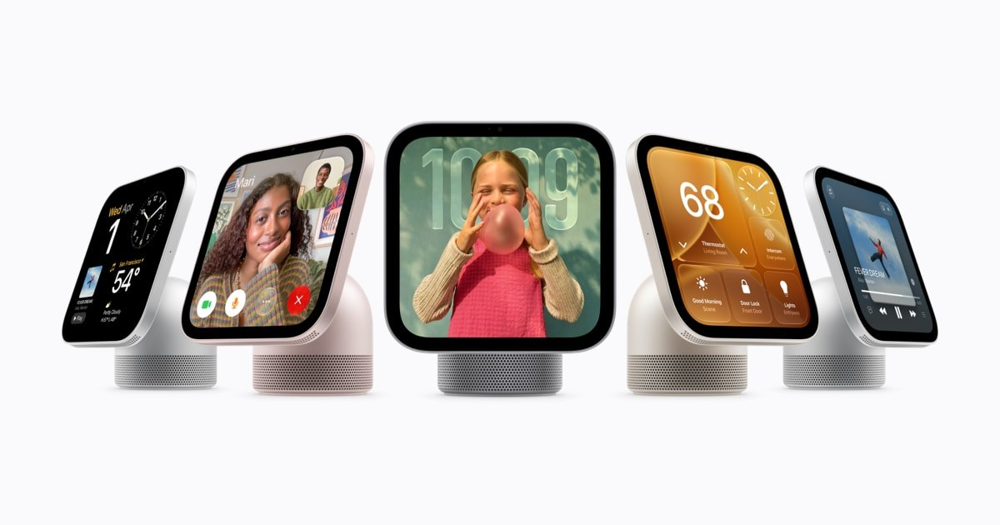
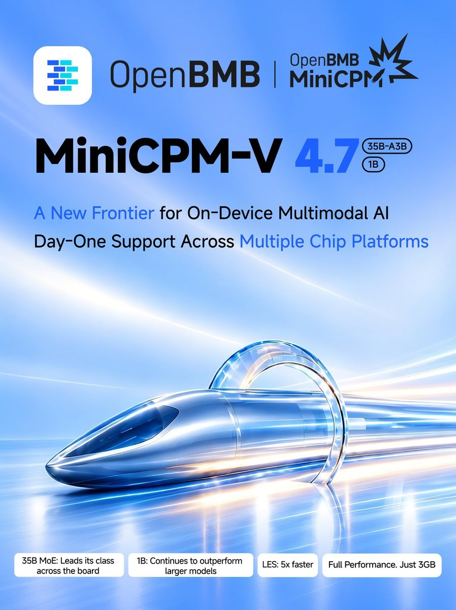

01模型 头条未证实项
Meta 交出首个前沿模型：Muse Wonder / Muse Wonder Full 发布，第三方智能指数 52 / 56，跻身第一梯队
10-13 00:55 北京时间AIHOT 热榜 #2 · 本期头条独立来源 5 家

Muse Wonder 发布主视觉（来源：Meta Newsroom）
介绍
Meta 超级智能实验室（MSL）在北京时间 10-13 凌晨发布 Muse Wonder 和 Muse Wonder Full，这是它重组 AI 团队 14 个月后的第一批前沿模型，主打「个人与专业智能体」任务。Muse Wonder 当天通过 Meta Model API 和 Muse Code 开放，Full 版只给 Muse Code 订阅用户，之后会接入 Meta 的个人智能体产品 Muse，先给订阅用户。第三方 Artificial Analysis 实测：智能指数 v4.3 上 Wonder 52、Full 56，比 6 周前的 Muse Spark 1.3（48）明显跳了一档。
为什么重要
这是 Meta 在 Llama 失利后第一次真正回到前沿牌桌，而且路线很明确：不拼 3D 炫技，主攻记忆（Active Memory）和长任务坚持（Active Focus），给「帮你处理保险理赔、看懂租约、写一个 App」这种真实代办场景用。短板也很清楚：知识类测试明显落后，价格比前代贵了近 3 倍。
要点
- 价格（TechCrunch、The Decoder）：Muse Wonder 每百万 token 输入 $4、输出 $20，与 Opus 5.5 同档；Full 版不进 API、暂无按量价格。AA 测算每个任务成本 $4.52，是 Spark 1.3（$1.60）的近 3 倍
- 强项是编码和智能体（The Decoder 引 AA 数据）：Terminal-Bench 4.0 从 33% 升到 57%；Coding Agents Index Full 版 68，与 Claude Code + Sonnet 5.5 持平；两款都支持 100 万 token 上下文和文本、图片、视频、音频输入
- 弱项是知识：AA-Omniscience 上 Full 仅 30，Opus 5.5 是 46；但幻觉率从 33% 降到 23%（The Decoder）
- 花絮：Alexandr Wang 承认团队「没专门训练 3D 演示游戏」（约 9200 赞），并在 10-13 06:31 宣布修复额度消耗过快的 bug、重置 Muse Code 用量；模型在 Meta 俄亥俄州吉瓦级 Prometheus 数据中心训练
⚠ Meta 官方基准为自测；独立分数以 Artificial Analysis 为准
02模型未证实项
Gemini 4 Argon 全球开放：首发价每百万 token $2 / $10，免费和 Plus 用户只能用 Flash
10-13 23:45 北京时间AIHOT 热榜 #1独立来源 3 家

Gemini 4 Argon 主视觉（来源：Google DeepMind 博客）
介绍
北京时间 10-13 23:45，Sundar Pichai、Google、Google DeepMind 和 Gemini 官号同时发帖，宣布 Gemini 4 Argon 全球上线（官方博客时间戳是 10-14 00:00）。这款 9 月 30 日首次亮相时只给 Fairwind 计划里的网络防御者用的模型，现在向开发者（Gemini API 付费层、AI Studio）、企业，以及 Google AI Ultra / Pro 订阅用户开放；Antigravity 里只限 Ultra。The Decoder 指出，免费用户和 Plus 订阅者只能用更弱的 Flash 系列。
为什么重要
Google 用价格换位置：首发价 $2 / $10 只有 GPT-6 Astra（$10 / $50）的五分之一，也比 Opus 5.5（$4 / $20）便宜一半。但这是限时价，11 月 30 日后翻倍。能力上，Google 自称多项领先，独立排名里 The Decoder 认为它仍落后 Opus 5.5 和前一天刚发布的 Muse Wonder Full。
要点
- 定价（官方博客脚注）：首发每百万输入 $2、输出 $10，缓存输入便宜 95%；2026-11-30 起恢复 $4 / $20
- 能力口径（Google 自报）：Vals Index 第 1；具身推理 ERQA 87%；Gray Swan 间接提示注入攻击成功率 0.7%；编码任务里「抄近路」尝试降到 2%；API 支持 100 万 token 输入输出统一上限
- 内部用例：Google 工程师用 Argon 后智能体代码提交量 +35%、回滚减少近 1/3；把 Gemma 4 E2B 在 A100 上的推理吞吐从约 37,900 提到 108,000+ token/s（2.85 倍）
- 福利：向 1 万名科学家免费开放 Antigravity 最高档 6 个月（需申请筛选）；Fairwind 计划扩到数百家合作方，可用无网络安全护栏版本
⚠ 官方首发帖在 10-13 23:45（窗口内），官方博客与多数跟进报道在 10-14 凌晨；基准与内部用例均为 Google 自报
03产品未证实项
马斯克把 Grok、Cursor、X Premium 打包成一个订阅：The X Subscription 五档 $0–$200，Cursor 里第三方模型改为另充值
10-13 07:08 北京时间AIHOT 热榜 #5独立来源 3 家

The X Subscription 发布图（来源：SpaceXSI / x.ai）
介绍
SpaceX Super Intelligence（原 xAI）推出 The X Subscription，把 Grok（聊天、语音、图像视频）、Grok Bot（AI 队友）、Cursor（编码智能体）和 X Premium 合进一个计划，分 Free / Plus / Premium / Super / Ultra 五档，未来几天逐步向全球开放。Cursor 和 Grok 官号随后确认加入。这条在上期因发布于北京时间 10-13 早上而留到本期。
为什么重要
这是第一次有人把社交平台 + 聊天助手 + 编码智能体捆成一张会员卡，Cursor 实际上变成了 Grok 模型的分发渠道。代价落在重度用 Claude / GPT 写代码的人身上：新套餐里第三方模型不再有包含额度，从第一次调用起按 API 标价另外充值。
要点
- 五档价格（x.ai 官方页）：Free $0、Plus $8/月、Premium $30/月、Super $100/月、Ultra $200/月；Premium 相当于此前 SuperGrok + Cursor Pro + X Premium+ 合计 $90/月
- 额度（官方页）：付费档共享一个 Grok 模型用量池（Grok App、X 里的 Grok 标签、Cursor 通用）；Premium / Super / Ultra 分别是 Plus 的 4 倍 / 15 倍 / 50 倍；每档在 Grok 模型上的编码用量至少是同档 Cursor 套餐的 2 倍
- 第三方模型：只在 Premium 及以上可用，按 API 标价充值计费；@grok 官号在回复里确认，切换后原来包含的「Other Models」额度会取消
- 老用户：可保留原计划，或切换并按剩余时间比例退款；团队版 Premium 及以上按个人价计席位，编码用量是旧 Cursor Teams 的 3 倍
⚠ IT之家称 Ultra 额度为 Plus 的 20 倍，与官方页「50 倍」不符，以官方页为准
04行业未证实项
Character.AI 成立五年申请破产：迪士尼出价 2000 万美元托底，找不到买家就关停
10-13 12:56 北京时间AIHOT 热榜 #6独立来源 7 家

Character.AI 标识（来源：The Verge）
介绍
AI 角色聊天平台 Character.AI 宣布启动第 11 章破产程序，通过法院监督的出售流程卖掉公司和资产。法院文件显示其资产和负债都在 5000 万–1 亿美元之间。迪士尼作为首个竞购方，出价 2000 万美元买下部分未披露资产，外加一份非独占、永久的技术许可。出售预计 11 月底或 12 月初完成，期间平台和付费订阅照常运行。
为什么重要
这是生成式 AI 热潮里第一批「明星独角兽」走到破产的标志性案例：2024 年 Google 花 27 亿美元挖走创始人，如今公司只值迪士尼的 2000 万底价。破产文件把账算得很直白：用户越活跃，算力越烧钱，订阅收入覆盖不了，再叠加未成年人诉讼和监管压力。
要点
- 交易结构（TechCrunch、The Verge）：迪士尼是「首席竞标方」，2000 万美元作为竞价底价，其他买家可以加价；迪士尼还将通过上月随前 CEO Karandeep Anand（现任迪士尼 CTO）跳槽的前员工提供过渡服务
- 最坏结果：CEO Colin Adams 表示目前还没有收购方案，「如果没有合适报价，平台将逐步关停」
- 账本（404 Media 于 10-14 凌晨援引破产文件）：算力支出 2024 年每月 1380 万美元、2025 年每月 1000 万美元；订阅收入峰值每月仅 280 万美元，含广告总收入峰值 530 万美元；截至 8 月仍每月亏 800–900 万美元
- 来路：2022 年估值破 10 亿美元；累计融资超 1.93 亿美元（TechCrunch 引 PitchBook）；近一年尝试过 AI 视频、社交信息流、微短剧等转型
⚠ 财务数字来自 404 Media 对破产文件的转述（10-14 凌晨发布），法院原件未读到
05行业未证实项
Epic 给迪士尼合作射击游戏下令「不再手写代码」：全面转向 AI 先行，游戏无限期延期
10-13 02:00 北京时间AIHOT 10-13 日报 · 行业动态独立来源 4 家
Epic × 迪士尼合作宣传图（来源：Ars Technica）
介绍
据彭博社报道（Ars Technica、The Verge 转述），Epic Games 在与迪士尼合作的漫威 + 星球大战题材射击游戏上改为「AI 先行」：内部消息称「不再有手写代码」，美术资产「用完整 AI 工作流生成」，人类开发者负责管理和引导 Claude 等模型的产出。这款原定 2027 年 3 月上线的游戏已无限期延期。Epic CEO Tim Sweeney 随后在 X 上确认「Epic 正在进行一次大转向」。
为什么重要
这是 3A 级游戏公司第一次公开把一个大项目的编码和美术整体交给 AI。Sweeney 强调目标「不是用更少的人做同样的事，而是让每个人做更多更好的东西」，但时间点很敏感：Epic 今年 3 月刚裁员 1000 多人，A.V. Club 称员工得知消息后「震惊」。
要点
- 项目背景：迪士尼 2024 年向 Epic 投资 15 亿美元，双方合作这款射击游戏；彭博称延期原因还包括人手不足、开发慢于预期
- Sweeney 原帖：「为最大化 AI 加速而重新调配开发者」，约 1.5 万赞、5000+ 回复，是本期 X 雷达第 1 名
- Epic 发言人：「我们正在拥抱 AI 加速开发，由 Epic 开发者担任愿景和创意的主导者」
- 行业对照（Ars 引 GDC 调查）：游戏从业者中 36% 在工作中用生成式 AI，但多用于调研和头脑风暴（81%），用于写代码的只有 47%
⚠ 彭博原文付费未读到，内部消息原话经 Ars Technica / The Verge 转述
06资本未证实项
据《财经》：DeepSeek 第二轮融资半个月翻倍到约 1000 亿元，投前估值仍约 5000 亿元（未证实）
10-13 09:32 北京时间AIHOT 快讯（X.PIN 转引）独立来源 2 家

DeepSeek 标识（来源：腾讯新闻 / 三言科技配图）
介绍
《财经》援引多位参与交易人士称，DeepSeek 将在近期完成第二轮融资，金额从原计划的 500 亿元增至约 1000 亿元（约 140 亿美元），不到半个月翻了一倍；新老股东各出约一半，投前估值仍约 5000 亿元。《科创板日报》采访的一位参投基金 LP 称报道「基本符合事实」，但交易「仍在动态变化」；DeepSeek 公关对此「不予评论」。
为什么重要
如果落地，DeepSeek 半年内将融到约 1500 亿元，是今年中国一级市场最大的单笔融资，也意味着这家一直以「低成本」著称的实验室开始按吉瓦级算力的标准备粮。「增量不加价」的结构说明想进场的钱远多于份额。
要点
- 投资方（《科创板日报》）：新进石溪资本、中芯聚源、CPE 源峰、君联资本、吉利等，以产业资本为主；首轮的宁德时代、腾讯、IDG、砺思、拾象继续跟投，其中宁德时代拟追加约 100 亿元（首轮约 50 亿元）
- 首轮回顾（《财经》）：今年 4 月启动，规模超 500 亿元、估值超 3500 亿元，6 月底交割，7 月随即开启本轮
- 股东红线（《财经》）：DeepSeek 要求投资方把部分专项基金调整为盲池备案，避免穿透后突破 200 人股东上限；《科创板日报》称仍有资金在打听未关账基金的额度，想间接参与
- 上市筹备：《财经》称其 8 月下旬起接触投行筹备科创板上市，最快今年末递表、目标 2027 年挂牌；前高瓴创投合伙人严文韬已出任 CFO（《科创板日报》）
⚠ 未证实：DeepSeek 未官宣，公关「不予评论」；金额与估值均为媒体援引知情人士
07硬件未证实项
苹果把新 Siri 搬进客厅：7 英寸带屏中枢 HomeView $299，配 HomePod mini 2、新 Apple TV 和智能家居配件
10-13 20:59 北京时间AIHOT 热榜 #4独立来源 2 家

Apple HomeView 四种配色（来源：Apple Newsroom）
介绍
苹果在「Welcome Home」发布会上推出首款带屏智能家居中枢 HomeView：7 英寸 Liquid Retina 屏、A18 芯片，桌面版和壁挂版都卖 $299，今天起预购、11 月 13 日在美国、英国、加拿大、澳大利亚、印度、新西兰等地发售。它是苹果全新 Siri AI 的主要载体，同场还发布了 HomePod mini 2（$149）、第四代 Apple TV 4K，以及与 LG、施耐德合作的 Apple Home Collection 配件。
为什么重要
这是苹果把「新一代 Siri」第一次作为家庭共享设备的核心卖点。The Verge 上手后的评价是：屏幕好看，但更像一个「在家少用 iPhone」的设备，智能家居能力本身没什么新东西。另外，因 Siri AI 在欧盟 iOS 上不可用，HomeView 不在欧盟销售。
要点
- 多人识别：最多认出 6 位家庭成员的脸，各自有主屏幕；信息、日历等私人内容只在认出本人且其 iPhone 在附近并近期解锁时才显示
- Siri AI：目前仅英语、仅在美英加澳印新等 8 个国家和地区可用，在 HomeView 软件 27.2 中为 beta；依赖服务端模型的功能有每日额度，官方称未来扩容将收费
- 同场新品：HomePod mini 2 $149，10 月 30 日到店，Siri AI 稍后推送；Apple TV 4K（第四代）$299；LG 视频门铃 $249.95 起
- 中国版：X.PIN 援引消息人士称 HomeView 将在中国大陆上市但剥离 AI 功能（未证实）
⚠ 「中国版剥离 AI」为 X.PIN 单一信源，未证实
08开源未证实项
面壁开源 MiniCPM-V 4.7：35B 参数的 MoE 多模态模型，iPhone 上只占 3GB 内存跑 13+ token/s
10-13 01:15 北京时间AIHOT 10-14 日报 · 模型独立来源 2 家

MiniCPM-V 4.7 发布海报（来源：OpenBMB X 帖配图）
介绍
面壁智能联合 OpenBMB 社区开源 MiniCPM-V 4.7，分 35B-A3B 和 1B 两个版本，其中 35B-A3B 是该系列第一个 MoE（混合专家）模型。官方称它是首个能在端侧无损流畅运行的开源 MoE：靠新的 LES（前瞻专家调度）技术，在 iPhone 17 Pro Max 上只用 3GB 内存跑出 13+ token/s。
为什么重要
MoE 模型总参数大、每次只激活一小部分，但手机内存装不下全部专家。LES 的思路是预测下一层要用哪些专家、提前从存储里加载，把「模型多大」和「要占多少内存」拆开。这让 35B 级别的视觉模型第一次能在手机上实用，看图、读文档、识路牌都不必上云。
要点
- 速度（OpenBMB 原帖）：LES 带来约 5 倍提速且输出逐字节一致；iPad Pro M4（16GB）上 17+ token/s，iPhone 17 Pro Max 上 13+ token/s，内存约 3GB
- 视觉压缩：支持 4 倍 / 16 倍视觉 token 压缩；16 倍压缩下 OCRBench 仍有 90.4，比 Qwen3.6 35B-A3B 高 5.2 分
- 对标（GitHub README）：35B-A3B 在 Instruct 模式下用更短推理时间拿到比 Qwen3.6 35B-A3B 更高的综合分；1B 版显著领先 Qwen3.5 0.8B
- 生态：支持 iOS、安卓、鸿蒙，适配 Intel、AMD、Arm、瑞芯微、后摩；同步开源低成本微调方案 SRFT
⚠ 性能对比为官方自测
NVIDIA：RTX Spark 笔记本 10 月 16 日上市，配套本地智能体模型 Nemotron 3.5 Bolt 74B10-13 20:00RTX Spark 最高 128GB 统一内存、1 PFLOPS AI 算力；为本地智能体打造的 Nemotron 3.5 Bolt 74B-A9B 用 2-bit 量化压进 24GB，10 月 15 日发布并完全开源（含训练数据）；个人 AI 路由工具 PAIR 结束 beta；Adobe 称 Photoshop、Premiere 在 RTX Spark 上最高快 2 倍
Prime Intellect 收购 Moondream，两位创始人加入主导推理与多模态10-13Moondream 创始人 Vik Korrapati、Jay Allen 加入，其推理引擎 Photon 并入 Prime 的推理服务；Prime 称 Moondream 3.1 每秒 34 次请求，比次准的开源模型快约 24 倍，指物定位精度达 Muse Wonder 的 80%、成本约 1/1000（均为公司口径）
Manus 与 OPPO 合作：智能体能力进入 AI Mind Pilot，Find X10 首发10-13 22:00Manus 能力整合进 OPPO AI Mind Pilot 新的 Agent 模式，在搭载 ColorOS 17 的 Find X10 系列首发；查找、整理本地文件和照片等任务由端侧模型完成、原始内容不发给 Manus，需外部处理时先征求用户确认
Grok Bot 上线「记忆迁移」，可把 ChatGPT / Claude 的记忆搬过来10-13 12:43马斯克发帖展示 Grok Bot 的 memory transfer 功能（约 6800 赞、445 万曝光）；据 AIHOT 整理，可导入在 ChatGPT 或 Claude 中积累的记忆，和当天的 X Subscription 打包一起抢用户
ElevenLabs：英国上议院首次有议员用 AI 复刻嗓音发言10-13 23:58患脊髓性肌萎缩症的 Baroness Campbell 用 ElevenLabs 复刻的本人嗓音在上议院演讲，官方称是英国议会首次；ElevenLabs 称其技术已为 1.1 万多名失声者恢复声音，目标帮助 100 万人
Hassabis：医疗对话 AI「AMIE」的前瞻性临床研究登上《柳叶刀》10-13 09:09Demis Hassabis 发帖祝贺团队，称这是研究「从实验室走向真实临床」的里程碑；论文细节本期未逐条核对
AIHOT 日报 10-13 / 10-14 + 热榜 + 事件时间线 + 全量条目读到
两期日报按条目自身时间筛选；另拉取全量条目接口约 700 条，窗口内 343 条逐条看过标题
X 公开数据（官方账号原推 / 搜索 / 回复）读到
8 条主线中 7 条有原推或官号帖；DeepSeek 无官方帖，只有媒体与转述账号
你在 10/13 发的推文（@HhhharryRen）读到 · 没更新
接口正常返回，窗口内 0 条
WaytoAGI 飞书知识库读到
无头浏览器展开「10 月 13 日」，共 5 条，均为教程 / 解读，未逐条核对数字
官方页面核对读到
about.fb.com、research.meta.ai、blog.google、deepmind.google、x.ai、apple.com/newsroom（3 篇）、blog.character.ai、github.com/OpenBMB、blogs.nvidia.com、primeintellect.ai、manus.im
媒体交叉（抓取 / WebSearch）读到
TechCrunch、The Verge、The Decoder、Ars Technica、A.V. Club、404 Media、IT之家、南方财经（转《财经》）、虎嗅（转《科创板日报》）、腾讯新闻
彭博社原文（Epic）没读到
付费墙；内部消息原话经 Ars Technica、The Verge 转述
《财经》原站没读到
caijing.com.cn 连接超时；用南方财经网转载全文核对数字
微信公众号原文（面壁智能、千问 APP）没读到
微信页面需验证；MiniCPM 数字改用 GitHub README 与 OpenBMB 原帖核对，千问眼镜未收入
Character.AI 破产法院文件没读到
财务数字来自 404 Media 转述